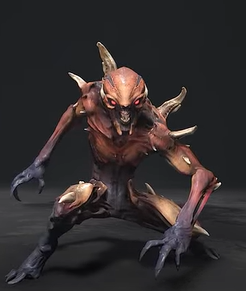
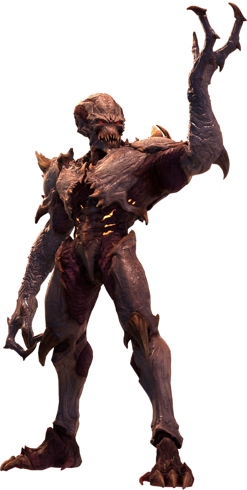
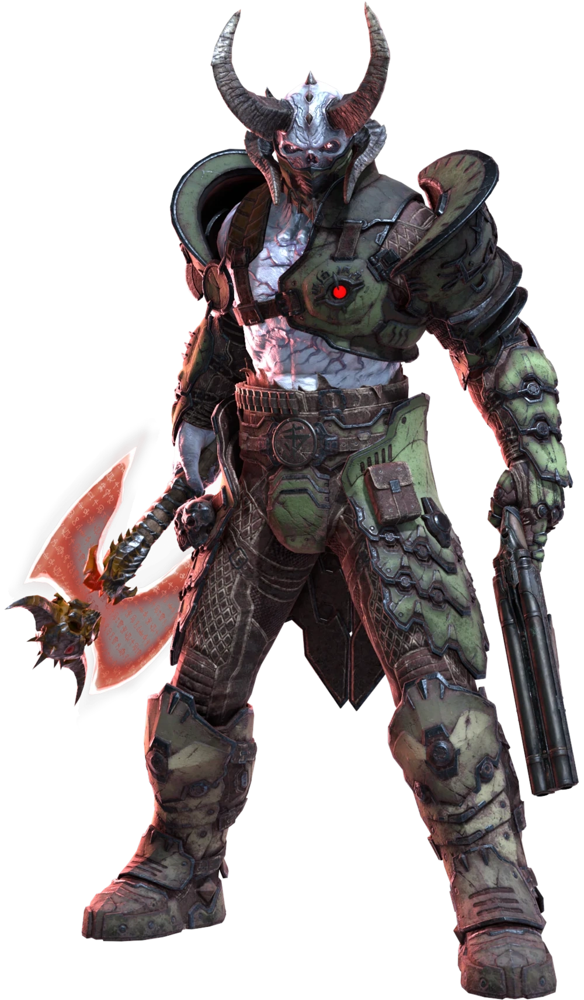
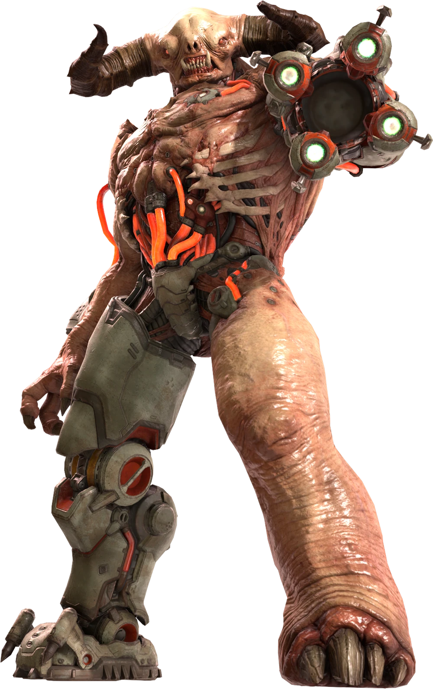

Scavengers of the underworld, Imps are among the most common of beasts found on the scorched surface of the Hellscape. Lesser demons of Hell, the Imp possesses limited intelligence, driven only by a hunter's impulse to seek out prey - a task for which the Imp is naturally suited due to its innate capacity for violence. As a result of these attributes, the Imp makes for an ideal footsoldier and is often deployed in the warring legions of Hell, easily manipulated and controlled by commanding highborne demons at the behest of the sovereign chapters. It is common for the Imp to appear at the frontline of an offensive attack, an expendable resource unleashed in great numbers to overcome and break through the enemy front.
Imps
Archvile
Forged from Hellfire, the Archvile is feared among lesser demons for its innate ability to channel and manipulate the unholy powers of Hell magic. Descended from the eldest race of demons, the Arch-vile has long held a place within the ruling caste of high-born demon lords. Possessing superior intellect among the demon ranks, the Archvile's psychomancy powers make it a natural-born ruler of the savage and primitive beasts of Hell, capable of bending weak-minded underlings to serve its will.
Marauder
As civil war consumed Argent D'Nur, the Night Sentinels Guard was quartered by their faith. Torn between serving the Khan Maykr or revolting against that which they swore to protect. Those most disillusioned forswore their oath to the Sentinel royalty, abandoning their pact of allegiance made to the throne. These hardened warriors joined the separatist group led by the exalted Priest class, allying themselves with the Maykrs and their devout acolytes in an attempted coup against the Sentinel royal house. Those Sentinel warriors who fell in battle, having sided with the Maykrs, were ultimately denied finality in death. Resurrected by the Divinity Machine of Maykr design, these fallen Sentinels were returned from the dead, transformed by Hell's power, and recreated with a singular purpose: to hunt the Slayer, now reborn as Knights in Hell's army.Forged from Hellfire, the Archvile is feared among lesser demons for its innate ability to channel and manipulate the unholy powers of Hell magic. Descended from the eldest race of demons, the Arch-vile has long held a place within the ruling caste of high-born demon lords. Possessing superior intellect among the demon ranks, the Archvile's psychomancy powers make it a natural-born ruler of the savage and primitive beasts of Hell, capable of bending weak-minded underlings to serve its will.
Tyrant
Demon Lords to the black soul pits of Babel, the Tyrants have long served as wardens and slavers of the infernal pits. Weaponized and cybernetically altered by the UAC, the Tyrants are tasked with overseeing the collection and extraction of sin-branded souls from the mortal world, their role in Hell ordained by the unholy sigil of the Elder Hell-gods. A sadistic master of lesser demons, the Tyrants are feared for their cruelty and malice.
